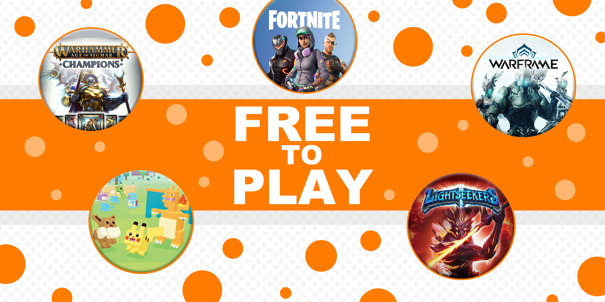
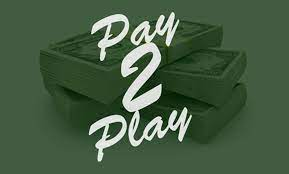
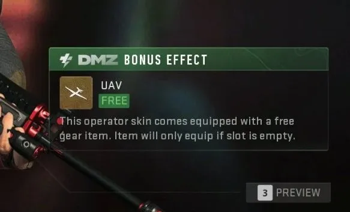

Hello there, no one could ever know the name of whoever created this design but lets talk about video games and humanity's access to them. Videos games not only have been classed as a Role-Playing Game, First-Person Shooter, Action-Adventure Game, Simulation Vide Game, etc. but they have also been classified as three of categories. These three categories are the three main topics that pro gamers know about which is Free-To-Play (F2P), Pay-To-Play (P2P), and Pay-To-Win (P2W). This page will go over the definitions and what F2P, P2P, and P2W. It will also show you a few examples of those three types of games that the game developers decides to make for users to hate, users to become hardcore fans, to be obsessed, to be loving towards the game that is designed to be a way that it is meant to be. First, lets go over Free-To-Play video games.
Free-To-Play (image to the left) is a game that allows you to play it for free without any purchases but can contain in-game purchases that don't give the user any advantages when facing against enemies. Examples of free to play games is Warframe, Fortnite, Brawl Stars, PUBG, Slither.io, and so much more. Free to play video games can be entertaining, more enjoyable, less toxic (except games like that is a battle royale), in-game purchase is optional (not pay to play/pay to pay), and users can use their own skills to fight against more challenging opponents that are stronger and more advanced than most other players. Not only that, as you play certain games to create a type of character that can be on the more defensive, offensive, balanced with certain buffs or attachments to make the character more based on what the user wants to be in a game like Happy Wars (should be revived in my opinion), Pokemon Quest, etc. Free to play video games are not popular nor known that much from other players due to not having a recommendation, barely starting off from launch, a little free indie video game, or content isn't viewed to be good like a 2000s or 1990s video game content. This is a problem not only for gameplay to be reviewed as good but video game developers who have ideas to make a game to end up poorly. This has made a massive impact to Free-To-Play games and the expectations that developers of video games are becoming more desperate to make a game that can change their current game ratings from low to high once more.
Due to these effects, players and users move to pay to play or pay to win games like Call of Duty MW2 (2022), Call of Duty Black Ops 2 (Although good and well-made), Call of Duty in general is a pay to play but luckily most or a few are just a purchase required to make to download and then play the game for real. Pay-To-Play video games are games that requires you to pay real life currency to play the game. The game would normally need the user to pay real life currency to be able to play and enjoy the game if it meets to the user's likings. Sometimes, some games or companies wants you to keep paying the game and spend more money to get more things and get "better" at the game just to be able to enjoy the game or to even play it at the beginning. Examples of a company that wants their player base to keep spending their money on upcoming games is EA Games. EA Games, according to players that played games from EA games, have been forcing players to keep paying them for certain things that not even I have information about yet other than horrible customer services, which is one of the CRUCIAL ingredients to keep a stabled and popular company. Even worse, users who try getting help from EA's customer services gets messages that looks like it was from an AI but it wasn't. People will get dissatisfied with teh purchases made with the game or within the game for more items and cosmetics, possibly with some pay to win attributes, and more. EA isn't the only problem with costumer services and gameplay development, Activision has been recently making unholy and game heartbreaking decisions that caused my own brother to not like Modern Call of Duty due to bugs and gameplay issues which makes the game completely horrible with just about thousands of developers in one game. Modern Warfare 1 & 2, World at War, and Black Ops 1 & 2 are still views as the golden games of Call of Duty while Modern Warfare 3 and Black Ops 3 were not really too playable with some glitches, bugs or re-textures, recycling, and changing in some maps but not too bad. Only problem was one of the games that game right before Black Ops 3 is Advanced Warfare and no one wants to remember that game due to their wallet being emptied into the game just to gain variants of weapons, taking a similar route to EA games with loot boxes and going from a pay to win type of scenario to a real life Pay-To-Play to just enjoy one second of the match with a weapon that you got that'll keep fame for only a year in the entire Call fo Duty franchise which makes no sense in why people want a memory of that game or even Infinity Warfare that ALSO requires loot boxes to enjoy the game.
This isn't were things may go downhill for there is something far greater than the evils of giving the rich another advantage to play and 'enjoy' video games. Behold of the descendant of allowing the rich get their way in the heirachy of the riches, Pay-To-Win. Pay-To-Win is also just like the other two, it's the exact meaning is it is said. You pay the game just like how you pay the coaches to gain an advantage over the rest of the teams and players to win the game or match. A good example of this is Supercell's popular but also most paid-to-win game, Clash Royale. Clash Royale is a game where it's a 1v1 or a 2v2 battle between two or four kings. The point of the game is to deal the most damage to your enemy with 8 cards that will spawn in a number of troops which have certain hitpoints, damage, and requires cards of itself to level it up as well as some magic items to help level it up depending on its rarity and how many magic cards of the same rarity the user has. I once played this game but due to users having to copy and use a spamming technique with low elixir cards, I quit the game. Then, I heard about Clash Royale having a Platnium pass or a royale pass that is greater than the regular royale pass, making magic items harder to get, and giving them away in the shop for a price of gems that's possibly 250 or 500 gems, or 5-10 dollars to get simply magic cards or other stronger cards like a Hero rarity card or a Legendary card that is too over powered for 10-20 dollars. This game that once needed you to just simply grind for just a few months to reach maxed level is now brought to the point of a rich and poor heirachy which the winners will be rewarded after a match. This makes a problem for people who are beginners or barely making it to the next arena and they face against someone who isn't suppose to be in their arena and is level 13-15 with almost or all maxed out deck. Another perfect example of Pay-to-Win, Modern Warfare 2 (2022), an operator gives a bonus DMZ effect which is a free UAV. A device that reveals enemy players and bots in your location is given to you for free, perfect way to win the game with an advantage for buying a skin. There is also a Variant of a hologram scope attachment to help more visually reveal enemies in a smoke bomb. Sorry, got a little fed up. Lets drift away from this topic for now, I need to cool down.